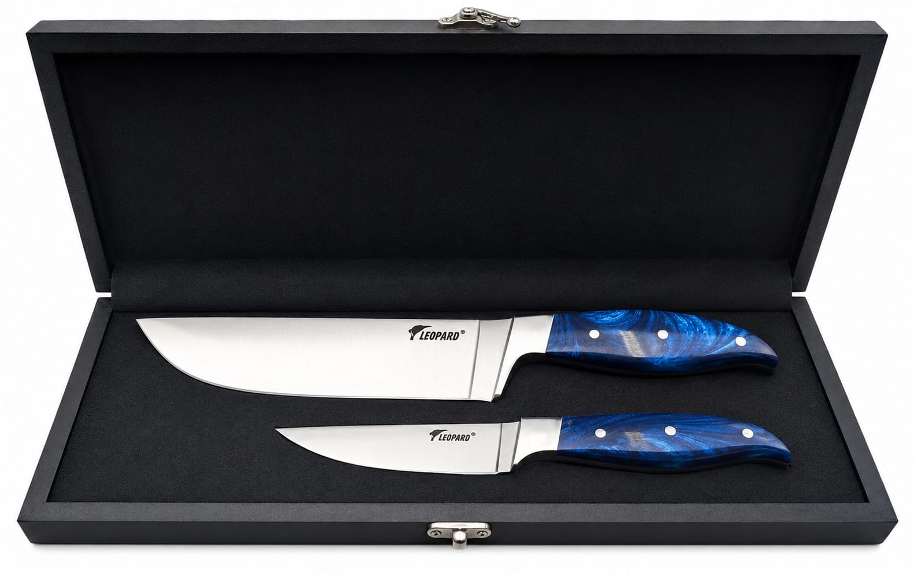

For Gujrat · From Sialkot
Chef Knife Set delivered to Gujrat.
Gujrat — the home of Pakistan's furniture, fans and ceramics — knows what it means to build things that last. Our workshop sits just 50 km up the GT Road in Sialkot. A chef knife set hand-forged in your district, in your hands within a day or two.

- 50 km from Gujrat
- Hand-forged, no middleman
- Free delivery to Gujrat
- Gift-boxed, ready to give
The chef knife set — for Gujrat kitchens.
Two finishes, same heirloom craftsmanship. Sapphire-blue resin or natural teak.
Delivery to Gujrat.
Gujrat is one of our closest neighbours — about 50 km north-east of our Sialkot workshop. We ship through Pakistani couriers (TCS, Leopards, M&P), and your chef knife set arrives within 1 to 2 business days, free, to any postal code — Civil Lines, Cantt, Pakka Garrah, Allahabad Mohallah, GT Road neighbourhoods, Kunjah Road, Jalalpur Jattan and the wider Gujrat district.
Payment is in advance via EasyPaisa or JazzCash. Same-day dispatch once your order is in, hand-packed in its black satin-lined gift box. PKR 6,700 all-in, including the Gujrat delivery.
50 km from Sialkot — craftsmen, Punjabi kitchens, and a knife built for both.
Gujrat and Sialkot share more than the GT Road — they share the craftsman's ethic of Punjab's industrial belt. Gujrat's reputation is in wood, fans and ceramics; Sialkot's is in precision metalwork and blades. Both cities build things intended to last.
The Gujrati kitchen reflects the city's Punjabi character: daal makhani as the daily anchor, mutton karahi for celebrations, fresh vegetable salans from seasonal produce bought in Civil Lines bazaar. The cooking is generous, the portions are for full families, and the daily volume is real. The 8-inch chef knife handles it all — large onions chopped fast, whole mutton separated at the joint, chicken boned cleanly for biryani.
Gujrat's agricultural hinterland — Kunjah, Dinga, Kharian — produces wheat, rice, sugarcane and abundant seasonal vegetables. Families in these tehsils cook fresh from the garden through the year: mustard and turnips in winter, bitter melon and eggplant in summer, mangoes from the orchard in the heat of July. The 8-inch knife handles large-volume vegetable prep quickly; the 3.5-inch paring knife handles the precise seasonal work: seeding chillies, peeling root vegetables, trimming the okra ends.
Gujrat also has one of Pakistan's largest overseas worker communities, with particularly deep roots in the UK. Families regularly send and receive gifts across borders. A hand-forged chef knife set in a satin-lined presentation box travels as well as it cooks: an ideal gift for UK-based relatives visiting home, or for Gujrat families sending something meaningful to relatives abroad. The quality of the Sialkot workshop shows in the hand — the weight, the balance, the polished edge — in a way that a mass-produced imported set does not.
Gujrat chef knife — questions
How long does delivery to Gujrat take?
1 to 2 business days from order confirmation. Gujrat is one of our closest cities — most orders ship the same day and arrive the next morning.
Do you deliver to Kunjah, Dinga, Jalalpur Jattan, Sara-e-Alamgir?
Yes — the wider Gujrat district including Kunjah, Dinga, Jalalpur Jattan, Sara-e-Alamgir and Kharian. Same free delivery, same 1–2 day timing.
Gujrat is famous for craftsmanship. How is your chef knife different from a local Gujrati piece?
Gujrat's craft tradition is in wood and ceramics — furniture, fans, pottery. Knife-making is concentrated in Sialkot, just up the road. We hand-forge with high-carbon stainless steel, full-tang construction, mirror-polished — the same workshop standard that has served Sialkot's blade trade for generations.
Can I order one set for myself and one for a relative in Gujrat?
Yes — order twice with two delivery addresses, or order once with a note. Two sets ship together; PKR 6,700 each, free delivery on both.
Is this a good gift for a UK-based Pakistani family with roots in Gujrat?
Yes — a hand-forged chef knife set from Sialkot travels as well as it cooks. For UK-based Gujratis visiting home, or for Gujrat families sending something meaningful abroad, the satin-lined box and workshop provenance make it the right choice. We deliver to the Gujrat address; the recipient can bring it back, or we can discuss international shipping separately.
Do you deliver to Mandi Bahauddin and Hafizabad from Gujrat?
Yes — we ship to Mandi Bahauddin, Hafizabad, Phalia, Malakwal and the wider district. Free delivery, 1–2 business days from Sialkot, PKR 6,700 all-in.